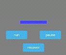

はじめに
phina.jsには、体力ゲージの実装に使えるGaugeという便利なクラスが用意されています。今回、これをベースにゲームの制限時間表示によく見られるタイマーゲージを作ってみました。
実行サンプル
- runボタンを押すとゲージが経過時間で減っていきます。
- pauseボタンで一時停止。recoverボタンで全回復します。
TimerGaugeクラスの仕様
以下のように、シーンに追加します。
// タイマーゲージ
var gauge = phina.ui.TimerGauge({
limitTime: 30,
}).addChildTo(this);
gauge.setPosition(this.gridX.center(), this.gridY.center());
プロパティ・メソッド・イベント
| プロパティ | 説明 |
|---|---|
| limitTime | 制限時間(秒） デフォルト値60 |
| メソッド | 説明 |
|---|---|
| run | タイマー作動 |
| pause | 一時停止 |
| recover | ゲージを満タンにする |
| イベント | 説明 |
|---|---|
| onfull | ゲージが満タンになった時 |
| onempty | ゲージが空になった時 |
その他のプロパティは、継承元のphina.ui.Gaugeクラスを参照して下さい。
使用方法
htmlファイルで以下のように読み込みます。
<script src="https://cdn.jsdelivr.net/gh/phi-jp/phina.js@v0.2.3/build/phina.js"></script>
<script src="https://cdn.jsdelivr.net/gh/alkn203/phina-extensions@master/ui/timergauge.js"></script>